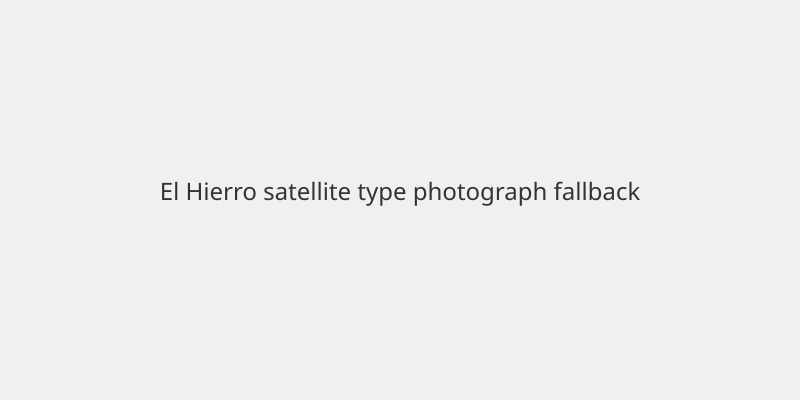

España · Migración · 9 de noviembre de 2026
Sánchez convoca de urgencia la Comisión de Inmigración tras la llegada de 4.587 personas a Canarias en seis días
.jpg)
Lo que coinciden los medios
El Gobierno de España ha convocado para el martes 10 de noviembre una reunión de la Comisión Interministerial de Inmigración. Entre el 1 y el 6 de noviembre llegaron a Canarias 4.587 personas a bordo de 49 embarcaciones, de las cuales 35 arribaron a El Hierro. El presidente del Gobierno de Canarias, Fernando Clavijo, ha descrito la situación como “absolutamente insostenible”. Los servicios de rescate marítimo han intervenido en múltiples cayucos. La convocatoria y las cifras de los primeros seis días del mes aparecen en cables de agencias y en declaraciones oficiales.
Lo que es solo cita
La calificación de “emergencia” por parte del cabildo de El Hierro es una declaración institucional. Las estimaciones sobre el origen exacto de cada embarcación (Senegal, Gambia, Marruecos) se basan en información policial y de rescate, no en un registro público cerrado de todos los ocupantes. El número de personas fallecidas en la ruta en las últimas semanas varía según las fuentes y no está consolidado en un solo dato oficial del día.
Mecanismo e historia
La ruta atlántica hacia Canarias es una de las principales vías de llegada irregular a España desde África occidental. El Hierro, con unos 11.400 habitantes, ha concentrado la mayor parte de los desembarcos recientes. Tras el episodio de Ceuta en julio, las autoridades regionales han solicitado refuerzos. La Comisión Interministerial reúne a los ministerios de Interior, Migraciones, Asuntos Exteriores y otros para coordinar respuesta. Los números de 2024 marcaron récords históricos; el ritmo de los primeros días de noviembre se aproxima a aquellos niveles en algunos reportes.
Lo que no es la historia
La convocatoria no es una decisión de cierre de fronteras ni una cifra final de llegadas de todo el mes. No establece cuántas personas permanecerán en el archipiélago frente a cuántas serán trasladadas a la península. No resuelve las condiciones de los centros de acogida en El Hierro.

Artículos fuente y puntuaciones
| Medio | Titular | T | N | C |
|---|---|---|---|---|
| Spain in English | Spain calls urgent migration meeting after 4,587 people reach Canary Islands in six days | 96 | 0 | 100 |
| Reuters | Migrant surge to Spain's Canary Islands is unsustainable, authorities say | 95 | 0 | 98 |
| Al Jazeera | Canary Islands’ El Hierro declares emergency amid migrant, refugee influx | 93 | -5 | 95 |